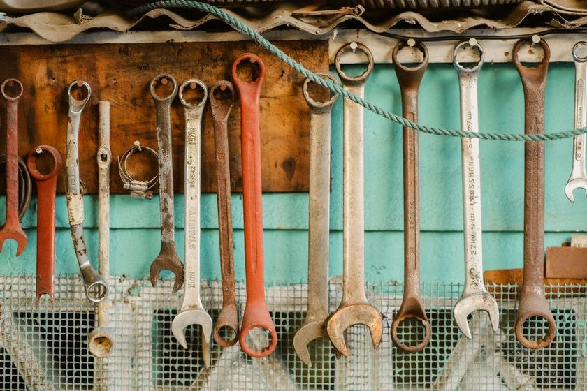

Workflow
Tool Crib Etiquette

The sign-out sheet on our wall lasted eleven days. It was a clipboard, a pen on a string, four columns — tool, name, out, back. On day one everybody signed. By day four only two of us did. By day eleven someone had used the back of it to work out a stair rise, and nobody replaced it. The clipboard is still there. It holds a spare pencil now, which is the most honest job it has ever had.
Why the sheet fails, and why that is not anybody's fault
The sheet asks for a signature at the exact worst moment. Someone needs the block plane because a door is binding and the customer is standing in the hallway. They have a plane in one hand and a door in the other. The pen is on a string. The string is short. The math is not close: three seconds of writing against a task already in motion, with a person waiting.
People who skip the sheet in that moment are not careless. They are prioritising correctly. Any system that only works when everyone is unhurried is a system that only works on quiet days, and quiet days are not when tools go missing. The failure is in the design, not in the person holding the plane.
There is a second problem, quieter than the first. A sign-out sheet records departures but has no opinion about returns. It tells you a tool left. It never tells you the tool came back, unless the same person, later, with different priorities, remembers to close the line. Half a record is often worse than none, because it invites you to trust it.
A shared bench is not held together by paperwork. It is held together by three or four habits that cost almost nothing to keep and are obvious when broken.
The three norms that actually hold
Across the small shops I have worked in — none of them larger than a single garage bay — the same short list keeps surfacing. Not because anyone wrote it down, but because those are the behaviours that survive a busy afternoon.
- Return before you leave. Not before you finish the job. Before you leave the room. The tool goes back at the end of the task that needed it, not at the end of the week that contained it.
- Say it out loud if you cannot. The tenon saw is on the truck, going to a site tomorrow. That is fine. What is not fine is the next person discovering it by opening an empty space at four in the afternoon. Ten spoken words beat a form.
- Never quietly relocate a tool. This is the one that does the most damage, and the one people feel most entitled to. Somebody decides the marking gauge belongs nearer the vice — for them, it does — and moves it. No malice. No announcement. Now nobody but that person can find it, and only while they remember.
The third one deserves the extra weight. A tool that is missing is a known problem. A tool that has been relocated is an unknown problem that looks like a missing tool, which means the shop spends its search energy on the wrong question. We have written about the arithmetic of that search elsewhere, in What a Missing Outline Actually Costs.
What a fixed layout does to the social cost
Here is the part that took me years to notice. Every one of those norms carries a social cost, and the cost is paid in awkwardness. Asking someone to put a chisel back means claiming that you know where it belongs. If the layout is a matter of habit or preference, that claim is an opinion, and opinions between colleagues get negotiated, deferred, or dropped.
Paint an outline on the wall and the claim stops being personal. The wall says where the chisel goes. You are not correcting a person; you are pointing at a fact. That shift — from "I think it lives here" to "it lives here" — is the whole mechanism. It is also why silhouettes outperform written labels for shared storage, which we unpack in Painted Outlines Versus Labels.
An objective layout also removes the most common defence a borrower has, which is that they genuinely did not know. In a shop with no fixed positions, "I didn't know where it went" is true. In a shop with outlines, nobody has to say it, and nobody has to hear it.
Friction, and where to put it
Every system moves friction around; none of them remove it. The question is only whether the friction lands on the person in a hurry or on the person with a spare minute. Sign-out sheets put it on the hurried person. Fixed positions and an end-of-day sweep put it on the calm one.
| Arrangement | Effort falls on | Tends to break when | Social cost of enforcing |
|---|---|---|---|
| Sign-out sheet | The borrower, at the moment of borrowing | The shop gets busy — exactly when it matters | High: you are chasing a signature, and it reads as distrust |
| Locked crib, one keyholder | The keyholder, continuously | The keyholder is off, ill, or on site | Low day to day, but resentment accumulates |
| Open shelves, no fixed spots | Nobody, until something is needed | Two people have different mental maps | Very high: every correction is a personal opinion |
| Fixed positions, painted outlines | Whoever finishes with the tool, briefly | Someone adds a tool with no home assigned | Low: the wall makes the claim, not a colleague |
| Fixed positions plus a closing count | The last person out, for a minute or two | The count is skipped for several days running | Lowest: the gap is found before anyone is blamed |
The count as a social device
We run a sweep at the end of the day — eyes along the wall, note the empty outlines, done in about ninety seconds. I used to think of it as inventory. It is mostly diplomacy.
A gap found at five in the evening is a small, neutral event. Someone says the rasp is in the van. Somebody else says they had the coping saw upstairs and goes to get it. Nobody has been accused of anything, because the gap surfaced before it inconvenienced a single person. That same gap discovered at nine the next morning, by a person who needs the tool right now, arrives with a temperature attached.
Timing does most of the emotional work. Find the absence while it is still trivia and it stays trivia. The habit itself is described in The End-of-Day Count Habit, and the reason it works on a wall but not in a drawer is the subject of Why the Drawer Hides Losses: a drawer holds no shape, so an absence inside it looks exactly like a full drawer until you dig.
Borrowing well, and lending better
None of this asks much of the borrower. Take the tool. Use it. Bring it to its outline before you leave the room. If it goes off site, say so to someone who is present, not to a piece of paper. If you think a tool sits in the wrong place, that is a real observation worth having — bring it up, move the outline with the group, repaint. Slowly and out in the open is fine. Quietly is not.
And the lender's half: give every tool a home before you expect anyone to return it to one. A shop that adds tools faster than it assigns positions will produce exactly the drift it later complains about. That drift is legible in the shapes themselves, which is the idea behind The Shape That Tells on You.
Read also
- Six Square Metres and a Count — how the whole arrangement started, and what the room actually holds.
- Restocking by Frequency, Not Alphabet — why sorting by how often you reach for something beats sorting by name.
- The Pegboard Nobody Redesigns — on layouts that stop being argued about, and what that stability buys.
A closing note
This is one small shop's experience of shared storage, written as observation rather than instruction. Benches differ, teams differ, and what settles into a habit in a six-square-metre room may not transfer to a busier crib with a dozen hands in it. Some people find the fixed-position approach removes most of the friction; others get further with a keyholder and a short list. Take what is useful, leave what is not, and let the room tell you which is which.